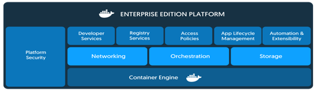

Docker快速入门
学习目标：
了解 docker特点和场景
应用 docker环境部署
docker是什么
Docker is the company driving(推动) the container movement and the only container platform provider to address every application across the hybrid cloud(混合云). Today’s businesses are under pressure to digitally transform(数字化转型) but are constrained(限制) by existing applications and infrastructure while rationalizing an increasingly diverse portfolio of clouds, datacenters and application architectures. Docker enables true independence between applications and infrastructure and developers and IT ops to unlock their potential and creates a model for better collaboration and innovation.

Docker是一个开源的容器引擎，它基于LXC容器技术，使用Go语言开发。
源代码托管在Github上，并遵从Apache2.0协议。
Docker采用C/S架构，其可以轻松的为任何应用创建一个轻量级的、可移植的、自给自足的容器。
简单来说：Docker就是一种快速解决生产问题的一种技术手段。
官方资料：
Docker 官网：http://www.docker.com
Github Docker 源码：https://github.com/docker/docker
优缺点
优点：
多： 适用场景多
快： 环境部署快、更新快
好： 好多人在用，东西好
省： 省钱省力省人工(123原则)
缺点：
太腻歪人： 依赖操作系统
不善于沟通：依赖网络
不善理财： 银行U盾等场景不能用